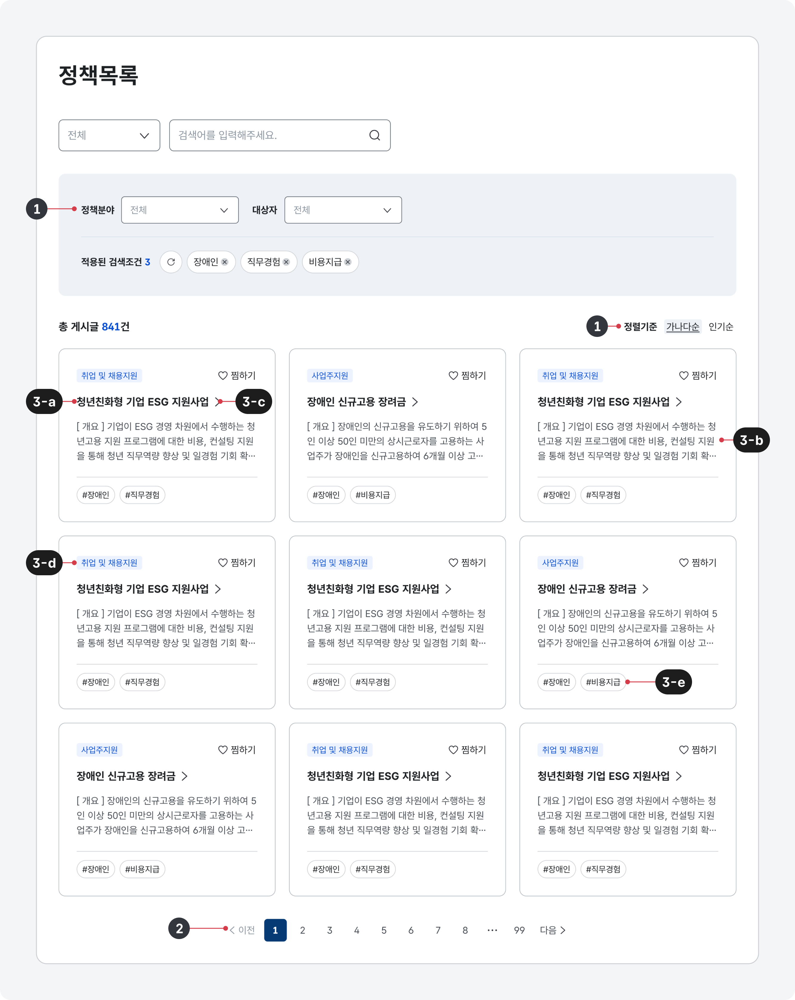
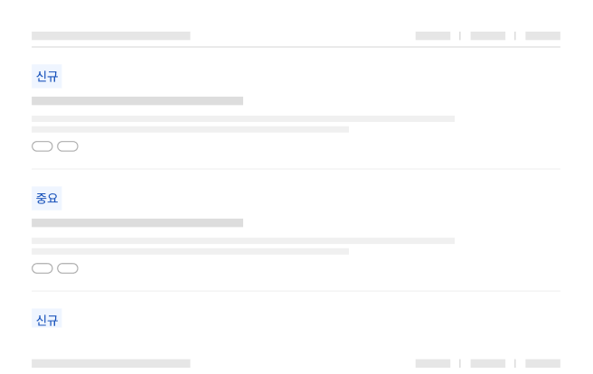

@@include("../inc/guide-lnb.html")
@@include("../inc/page-breadcrumb.html")
@@include("../inc/page-title.html", { "desc" : "" })
@@include("../inc/page-quick-nav.html")

구조

- 1.필터링·정렬 컨트롤 정책 자료 목록을 필터링·정렬하는 데 사용되는 컨트롤
- 2.페이지네이션 정책 자료 목록을 탐색하는 데 사용되는 컨트롤
-
3.항목 정보를 식별하기 위한 콘텐츠 집합으로 개별 항목에 대해 실행할 기능 관련 버튼, 상세 정보를 확인할 수 있는 탐색 링크가 포함될 수 있음
- a.제목자료명을 보여주는 텍스트. 상세 화면으로 이동하기 위한 링크로 사용됨
- b.미리보기/요약자료에 기본적인 정보를 요약하여 보여주는 텍스트
- c.꺾쇠/화살표헤딩이 링크로 작동함을 안내하는 시각적 단서
- d.배지자료의 주요 분류 체계를 나타내는 메타 데이터
- e.메타 데이터배지 외에 항목에 부여된 여러 데이터 속성을 표시하는 텍스트
사용성 가이드라인
권장필터링 또는 검색 기능을 제공한다.
사용자가 주로 찾는 자료의 특성을 고려하여 목록에 필터링, 정렬 방식, 상세 검색(기간, 자료 유형 등) 기능을 제공하여 사용자가 여러 분류 체계에 해당하는 정보를 효과적으로 조회할 수 있도록 만든다.
권장새로운 자료, 변경이 있는 자료를 명확하게 구분한다.
새로 등록된 정책 자료나 중요 자료에 '신규', '중요'와 같은 메타 데이터를 배지로 제공함으로써 사용자가 시의성 있는 정책 정보 자료를 탐색할 수 있도록 도와야 한다.
모범 사례

권장정책 관련 간행물의 발행 주기에 대한 정보를 제공한다.
정기적으로 정책 동향을 확인하고자 하는 사용자를 고려하여 간행물 자료의 발행 주기 정보를 본문의 부제목이나 별도 안내 영역에 제공해야 한다. 발행 주기가 일시적으로 변경되거나 발행이 일시적·영구적으로 중단되었다면 이러한 상황에 대한 정보도 반드시 제공되어야 한다.
모범 사례
예시
| 1Depth | 2Depth | File Link |
|---|---|---|
| 정책정보 | 정책목록 | html 화면 확인하기 |
@@include("../inc/page-related-items.html",{
"component": [
{
"title": "배지",
"url": "./../component/component_04_06.html"
},
],
"patternBasis": [
{
"title": "목록 탐색",
"url": "./../global/global_04.html"
},
{
"title": "첨부파일",
"url": "./../global/global_09.html"
},
{
"title": "필터링",
"url": "./../global/global_10.html"
},
{
"title": "정렬",
"url": "./../global/global_10.html"
},
]
})
@@include("../inc/page-faq.html")
@@include("../inc/page-info-update-log.html")
@@include("../inc/page-banner.html")